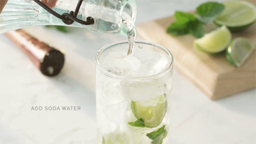
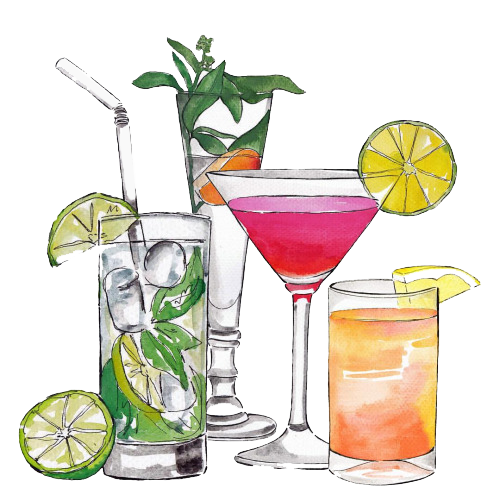

🍸How To Make Mojito🍸

※ 모히또 재료
- 얼음
- 라임 1/2개
- 설탕 (반숟)
- 토닉워터 350ml
- 애플민트잎 1/2줌
- 바카디 모히또 50ml
※ 모히또 만드는 방법
- 깨끗하게 닦은 라임을 적당한 크기로 썰어주기
- 애플민트잎 찬물로 세척해서 마른 수건으로 물기 제거하기
- 컵에 썰어둔 라임과 애플민트잎 넣고 빻아주기
- 설탕 넣어준다음, 애플민트잎과 라임, 설탕이 적당히 섞이도록 빻아주기
- (선택사항) 바카디 모히또 넣어주기
논알코올 모히또를 마시고 싶다면 5번 생략!
- 얼음을 넣어주기
중요 TIP! 믹서기로 얼음을 살살 갈아주면 더 좋다!
- 토닉워터를 잔에 가득 부어준 다음 애플민트잎 하나 올려주면 완성!
중요 TIP! 설탕은 밑에 가라앉아 있으니 적어서 녹인 다음 마시기!
※온라인에서 모히또 재료 사고 싶다면?

※ 당장 모히또를 만들어 먹고 싶다면?
- 대형 마트에 모든 재료들을 구매할 수 있으니,
대형 마트로 달려가자!
※ 모히또와 함께~
🍹Back To Previous Page🍹